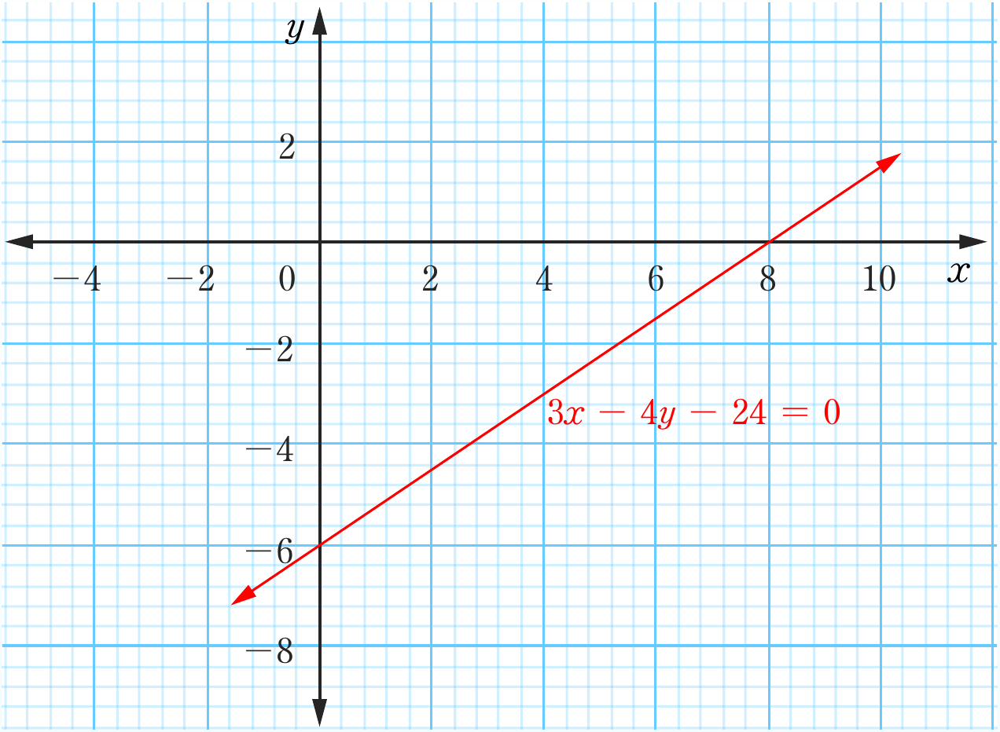

9.
(a)
(b)
(c)
(d)
11.
13.
(a)
(b)
15. 6 white breads and 2 brown breads
17. The cost of one cup of tea is Tshs 200 and the cost for a cake is Tshs 300
19.
21. (b) and (d)
23.
25.
27. 12 units of milk and 8.8 units of juice
29.

3x-4y-24=0xy-4 -2 0 2 4 6 8 102 0 -2 -4 -6 -8